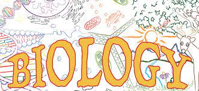
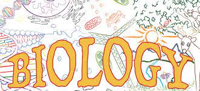
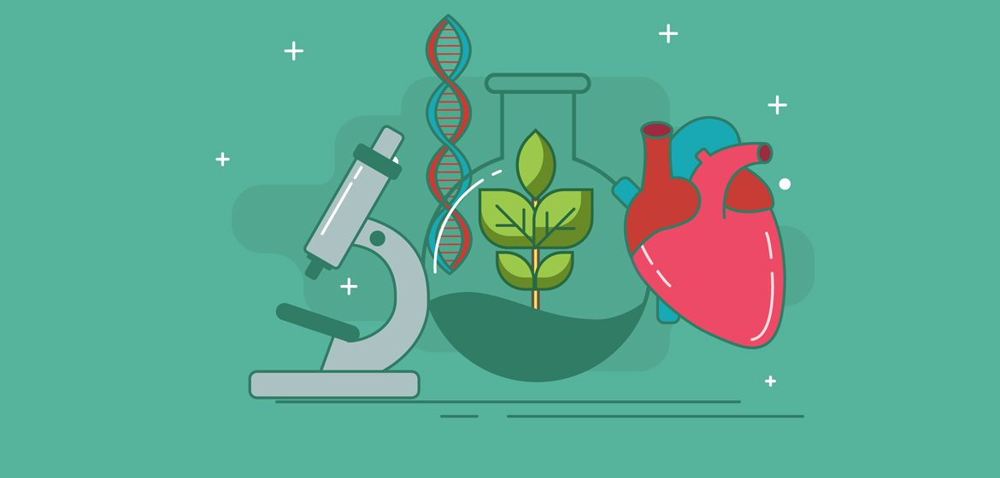
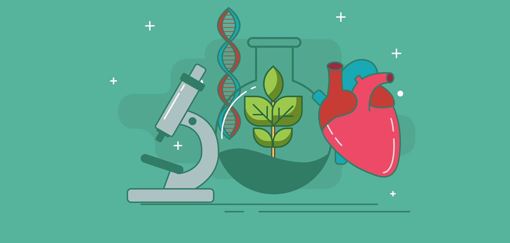
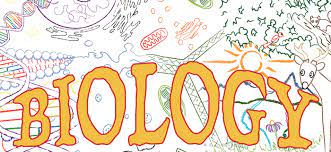
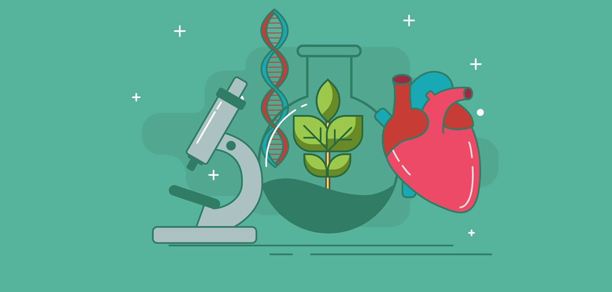

Roxanne Cota
My name is Roxanne Cota, I also go by Roxy. I am a Junior at University Of California, Riverside. My major is Biology and I aspire to be apart of the medical field as a Physician Assistant one day.
PAs are medical professionals who diagnose illness, develop and manage treatment plans, prescribe medications, and often serve as a patient’s principal healthcare provider. With thousands of hours of medical training, PAs are versatile and collaborative. PAs practice in every state and in every medical setting and specialty, improving healthcare access and quality.PAs are educated at the master’s degree level. There are more than 250 PA programs in the country and admission is highly competitive, requiring a bachelor’s degree and completion of courses in basic and behavioral sciences as prerequisites. Incoming PA students bring with them an average of more than 3,000 hours of direct patient contact experience, having worked as paramedics, athletic trainers, or medical assistants, for example. PA programs are approximately 27 months (three academic years), and include classroom instruction and more than 2,000 hours of clinical rotations.(aapa.org)
The preparation required in furthering my education for the past three years has not been easy by any means, but has been essential in discovering who I am, my work ethic, and my interests. I can move forward in the career I am extremely passionate for knowing that all my sleepless nights, academic successes, and also failures, are paving my way to professional growth. In my case, I did not just wake up one day and decide to pursue a degree in Biological Sciences without first fully comprehending what I was committing to. By pursuing a job as a Certified Nurse Assistant and working 12-hour shifts while still being a full-time student I quickly learned two things. My first discovery and possibly the most important was that I loved patient care, and while I never imagined myself giving bed baths to the elderly or changing diapers to those hurt, I felt rewarded in doing so. Additionally, the invaluable experience I earned in my almost two years of being a CNA validated that I would need to work hard without hesitation towards my academic goals so that I can achieve the only career I actually see myself content in doing. In this firsthand experience I ultimately discovered that what many say is indeed true, "if you love what you do, you'll never work a day in your life".
Furthermore, the challenging courses I have taken so far have come hand in hand with my experience as a CNA, being able to understand physiologically and anatomically gave me an enthusiastic mindset and a desire to want to learn more in the classroom so I can apply it to my real life experiences. I know that each academic step I have taken towards upper-division courses has taught me diligence, self-confidence in the classroom, and most importantly the required determination to one day reach my goals. I acknowledge that I will need to demonstrate my full potential in upper division courses, and I am ready to take head on the trials and tribulations that come hand in hand with my intended major.
Experience
Education
UC Riverside
Portfolio
 

 


